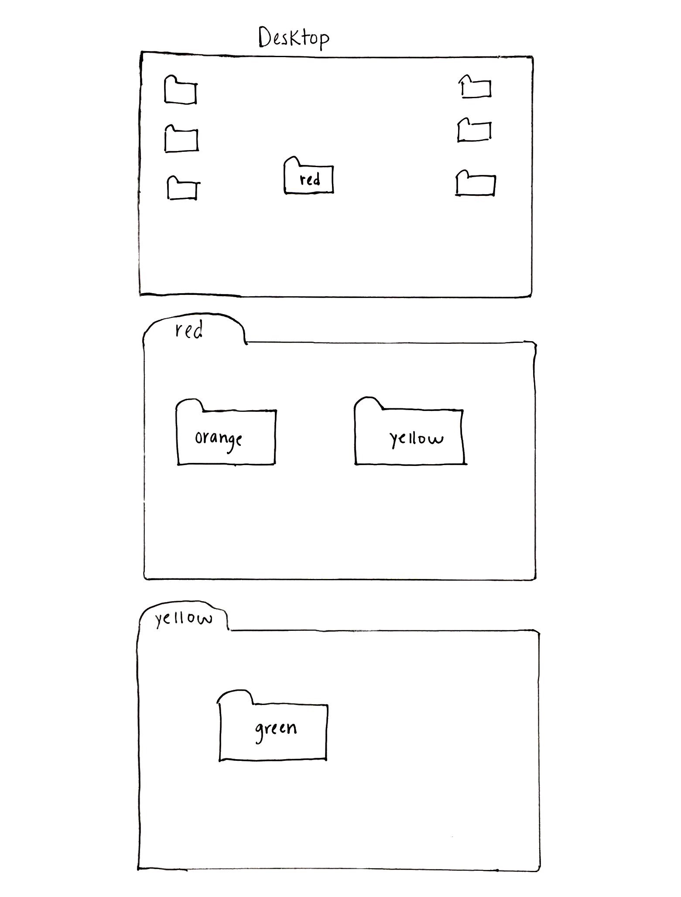
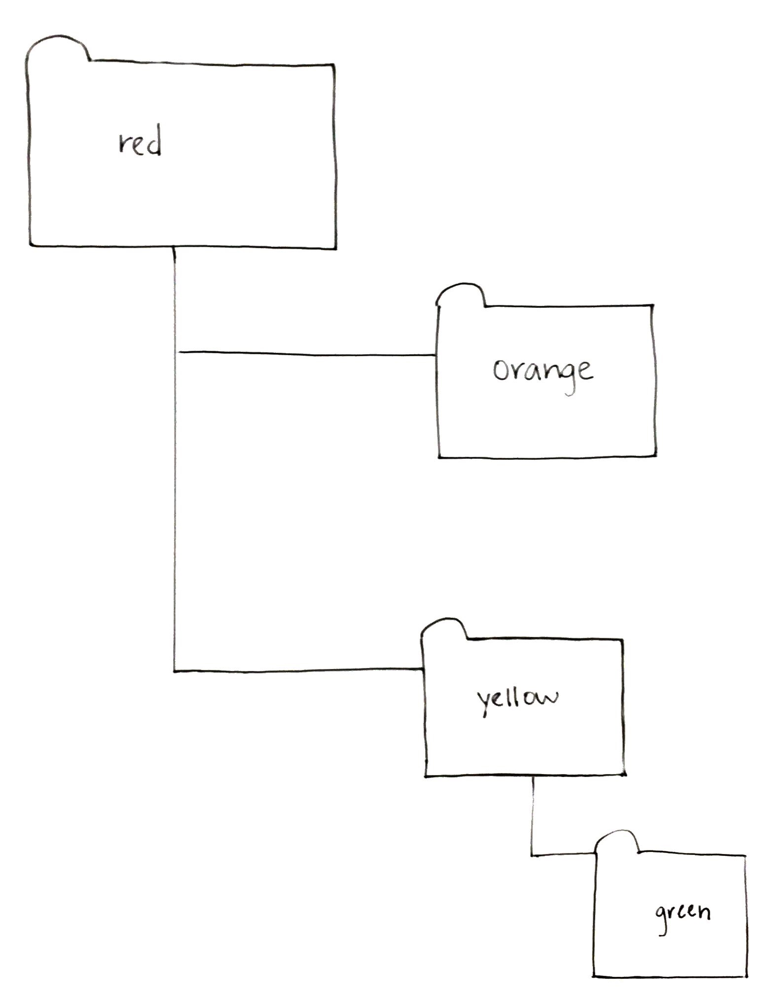

#install.packages("tidyverse")Introduction to R
1 What is R? Why R?
For detailed info visit R-project.org
The Inter-University Consortium for Political and Social Research (ICPSR) says:
R is “an alternative to traditional statistical packages such as SPSS, SAS, and Stata such that it is an extensible, open-source language and computing environment for Windows, Macintosh, UNIX, and Linux platforms. Such software allows for the user to freely distribute, study, change, and improve the software under the Free Software Foundation’s GNU General Public License.”
I don’t find this definition particularly helpful. I think of R as:
- An “open source” programming language and software that provide collections of interrelated “functions”
- “open source” means that R is free and created by the user community. The user community can modify basic things about R and add new capabilities to what R can do
- a “function” is usually something that takes in some “input,” processes this input in some way, and creates some “output”
- e.g., the
max()function takes as input a collection of numbers (e.g., 3,5,6) and returns as output the number with the maximum value - e.g., the
lm()function takes in as inputs a dataset and a statistical model you specify within the function, and returns as output the results of the regression model
- e.g., the
1.1 Base R vs. R packages
Base R
- When you install R, you automatically install the “Base R” set of functions
- Example of a few of the functions in in Base R:
as.character()functionprint()functionsetwd()function
R packages
- an R “package” (or “library”) is a collection of (related) functions developed by the R community
- Examples of R packages:
tidyversepackage for manipulating and visualizing dataigraphpackage for network analysesleafletpackage for mappingrvestpackage for webscraping
- All R packages are free!
- Often a package we install may be a collection of packages (e.g.,
tidyverse) and/or may depend on other packages, which will be automatically installed for you
Installing and Loading R packages
You only need to install a package once. To install an R package use install.package() function.
You need to load a package everytime you plan to use it. To load a package use the library() function.
library(tidyverse)── Attaching core tidyverse packages ──────────────────────── tidyverse 2.0.0 ──
✔ dplyr 1.1.2 ✔ readr 2.1.4
✔ forcats 1.0.0 ✔ stringr 1.5.0
✔ ggplot2 3.4.2 ✔ tibble 3.2.1
✔ lubridate 1.9.2 ✔ tidyr 1.3.0
✔ purrr 1.0.1 ── Conflicts ────────────────────────────────────────── tidyverse_conflicts() ──
✖ dplyr::filter() masks stats::filter()
✖ dplyr::lag() masks stats::lag()
ℹ Use the conflicted package (<http://conflicted.r-lib.org/>) to force all conflicts to become errors1.2 RStudio
“RStudio is an integrated development environment (IDE) for R. It includes a console, syntax-highlighting editor that supports direct code execution, as well as tools for plotting, history, debugging and workspace management.”

1.3 Markdown
What is Markdown?
- Markdown is a set of rules that define how the layout and presentation of text and images appear in a document. One of the most popular markup languages is HTML. For example, when you go to a website, there are certain sections like a header, navigation bar, specific headings, color schemes, font styles, etc.
- The Markdown language was created by John Gruber in 2004.
How is Markdown different than a WYSIWYG (WIZ–ee–wig) editor?
What you see is what you get (WYSIWYG) editing software enables you to point and click to make changes to the format, text, and images in a document and view the changes immediately (e.g., Microsoft Word, Google Docs).
In a Markdown file, you use Markdown syntax to format text and images.
Example Markdown syntax:
1.4 Level two heading
1.4.1 Level three heading
- Bullet point
Bold text
italics
What is markdown used for?
- HTML or PDF documents
- Websites
- Note taking (Obsidian)
- Books
- Presentations and more
See The Markdown Guide for more on Markdown.
1.5 Quarto (.qmd)
What is Quarto?

{kind=link}
From What can I use Quarto for?
- “Quarto is an open-source scientific and technical publishing system built on Pandoc. You can weave together narrative text and code to produce elegantly formatted output as documents, web pages, blog posts, books and more.”
Think of a Quarto file with the extension .qmd as a document written in Markdown syntax that embeds R code (Markdown + R code).
The integration of Quarto in R is relatively new and builds off of R Markdown.
- From RStudio: “R Markdown is a file format for making dynamic documents with R. An R Markdown document is written in markdown (an easy-to-write plain text format) and contains chunks of embedded R code.”
Similar to Quarto, for the last ten years, R users have relied on R Markdown to produce static and dynamic documents. However, “Quarto is a multi-language, next generation version of R Markdown from Posit, with many new new features and capabilities. Like R Markdown, Quarto uses knitr to execute R code, and is therefore able to render most existing Rmd files without modification.” From Quarto.
Key Takeaways:
Quarto does not depend on R; therefore, anyone using Python, Javascript, Julia, etc., can create documents with Quarto (.qmd) and collaborate on projects much more easily.
The Quarto visual editor in R Studio provides a WYSIWYG editing interface, making document creation seamless.
Quarto works with R Markdown and has additional features, making it easier to use.
What is Quarto used for?
- HTML, PDF, MS Word documents
- Presentations in Revealjs, Powerpoint, and Beamer
- Markdown (GitHub)
- Wikis
How we will be using Quarto in this class
- All lectures created using Quarto (.qmd) file extension
- You will use Quarto to complete homework assignments
After this class you might:
- never use Microsoft Word again!
- Use Quarto to create: papers for class; presentations; journal manuscripts; your dissertation; etc.
Further Reading:
- Markdown Guide, Basic Syntax: https://www.markdownguide.org/basic-syntax/
- A Brief History of R Markdown: https://slides.yihui.org/2021-Brazilian-R-Day.html#1
- R Markdown the Definitive Guide: https://bookdown.org/yihui/rmarkdown/
- RStudio User Guide Quarto visual editor: https://docs.posit.co/ide/user/ide/guide/documents/visual-editor.html
2 Executing R commands
2.1 R as a calculator
5[1] 55+2[1] 710*3[1] 302.2 Shortcuts for Executing Commands in R
Three ways to execute commands in R
- Type/copy commands directly into the “console”
- `code chunks’ in RMarkdown (.Rmd & .QMD files)
- Can execute one command at a time, one chunk at a time, or “knit” the entire
- Cmd/Ctrl + Enter: execute highlighted line(s) within chunk
- Cmd/Ctrl + Shift + k: “knit” entire document
- Can execute one command at a time, one chunk at a time, or “knit” the entire
- R scripts (.R files)
- This is just a text file full of R commands
- Cmd/Ctrl + Enter: execute highlighted line(s)
- Cmd/Ctrl + Shift + Enter (without highlighting any lines): run entire script
5+2[1] 710*3[1] 303 R objects and data structures
3.1 Preview of lecture on objects
- This section of the lecture provides a conceptual and practical introduction to “objects” in R
- Important: goal is to begin to develop familiarity with concepts that we will introduce in more detail in later weeks
- I don’t expect you to understand or retain all this information perfectly
- So just focus on understanding as much as you can and ask any questions that come to mind
3.2 Assignment
Assignment refers to creating an “object” and assigning values to it
- The object may be a variable, a dataset, a bit of text that reads “la la la”
<-is the assignment operator- in other languages
=is the assignment operator
- in other languages
- general syntax:
object_name <- object_values- good practice to put a space before and after assignment operator
# Create an object and assign value
a <- 5
a[1] 5b <- "yay!"
b[1] "yay!"3.3 Objects
R is an “object-oriented” programming language (like Python, JavaScript). So, what is an object?
formal computer science definitions are confusing because they require knowledge of concepts we haven’t introduced yet
More intuitively, I think objects as anything I assign values to
- For example, below,
aandbare the names of objects I assigned values to
- For example, below,
a <- 5
a[1] 5b <- "yay!"
b[1] "yay!"- Ben Skinner (R maven) says “Objects are like boxes in which we can put things: data, functions, and even other objects.”
Many commercial statistical software packages (e.g., SPSS, Stata) operate on datasets, which consist of rows of observations and columns of variables
- Usually, these packages can open only one dataset at a time
- By contrast, in R everything is an object and there is no limit to the number of objects R can hold (except memory)
3.4 (Atomic) Vectors
The fundamental data structure in R is the “vector”
- A vector is a collection of values
- The individual values within a vector are called “elements”
- Values in a vector can be numeric, character (e.g., “Apple”), or some other type
Formal classification of vectors in R
Here, I introduce the classification of vectors by Grolemund and Wickham
There are two broad types of vectors
- Atomic vectors. An object that contains elements. Six “types” of atomic vectors:
- logical, integer, double, character, complex, and raw.
- Integer and double vectors are collectively known as numeric vectors.
- logical, integer, double, character, complex, and raw.
- Lists. Like atomic vectors, lists are objects that contain elements
- elements within a list may be atomic vectors
- elements within a list may also be other lists; that is lists can contain other lists
Table 1. The six types of atomic vectors in R: double, integer, logical, character, complex, and raw
| Type | Example | Comment |
|---|---|---|
| double (or numeric) | -0.5, 120.9, 5.0 | Floating point numbers with double precision |
| integer | -1L, 3L, 5L | "Long" integers |
| logical | TRUE, FALSE | Boolean |
| character | "California", "New York" | Text |
| complex | -5+11i, 3+4i, 0+3i | Real+imaginary numbers |
| raw | 01, ff | Raw bytes (as hexadecimal) |
Atomic Vectors table adapted from (DiSCDown, Introduction to Programming with R, Chapter 4 Vectors)
Visual representation of the Grolemund and Wickham classification

One difference between atomic vectors and lists: homogeneous vs. heterogeneous elements
- atomic vectors are homogeneous: all elements within atomic vector must be of the same type
- lists can be heterogeneous: e.g., one element can be an integer and another element can be character
Intuitive approach to vectors used by Dr. Ben Skinner:
- data type: logical, numeric (integer and double), character, etc.
- data structure: vector, list, matrix, etc.
I find Skinner’s classification more intuitive conceptually. However, it isn’t completely consistent with how R and R functions think about objects.
Let’s practice creating simple vectors
Below we use the combine function c() to create a numeric vector that contains three elements
- Help file says that
c()“combines values into a vector or list”
#?c # to see help file for the c() "combine" function
x <- c(4, 7, 9) # create object called x, which is a vector with three elements
# (each an integer)
x # print object x[1] 4 7 9Vector where the elements are characters
animals <- c("lions", "tigers", "bears", "oh my") # create object called animals
animals[1] "lions" "tigers" "bears" "oh my"
Student task
Either in the R console or within the R markdown file, do the following:
- Create a vector called
v1with three elements, where all the elements are numbers. Then print the values. - Create a vector called
v2with four elements, where all the elements are characters (i.e., enclosed in single ’’ or double “” quotes). Then print the values. - Create a vector called
v3with five elements, where some elements are numeric and some elements are characters. Then print the values.
Solutions
v1 <- c(1, 2, 3)
# create a vector called v1 with three elements
# all the elements are numbers
v1 # print value[1] 1 2 3v2 <- c("a", "b", "c", "d")
# create a vector called v2 with four elements
# all the elements are characters
v2 # print value[1] "a" "b" "c" "d"v3 <- c(1, 2, 3, "a", "b")
# create a vector called v3 with five element
# some elements are numeric and some elements are characters
v3 # print value[1] "1" "2" "3" "a" "b"3.4.1 length() function to get the number of elements
“Length” of an atomic vector is the number of elements
For remainder of lecture, I’ll use the term vector to refer to atomic vectors
Use length() function to examine vector length
x <- c(4, 7, 9)
x[1] 4 7 9length(x)[1] 3animals <- c("lions", "tigers", "bears", "oh my")
animals[1] "lions" "tigers" "bears" "oh my" length(animals)[1] 4A single number (or a single string/character) is a vector with length==1
z <- 5
length(z)[1] 1length("Tommy")[1] 13.4.2 typeof() function to get the data type of a vector
The “type” of an atomic vector refers to the elements within the vector.
While there are six “types” of atomic vectors, we’ll focus on the following types:
- numeric:
- “integer” (e.g., 5)
- “double” (e.g., 5.5)
- character (e.g., “ozan”)
- logical (e.g.,
TRUE,FALSE)
Use typeof() function to examine vector type
x[1] 4 7 9typeof(x)[1] "double"p <- c(1.5, 1.6)
p[1] 1.5 1.6typeof(p)[1] "double"animals[1] "lions" "tigers" "bears" "oh my" typeof(animals)[1] "character"Data type of a vector, numeric
Numeric vectors can be “integer” (e.g., 5) or “double” (e.g., 5.5)
typeof(1.5)[1] "double"R stores numbers as doubles by default.
x[1] 4 7 9typeof(x)[1] "double"To make an integer, place an L after the number:
typeof(5)[1] "double"typeof(5L)[1] "integer"Data type of a vector, character
In contrast to “numeric” data types which are used to store numbers, the “character” data type is used to store strings of text.
- Strings may contain any combination of numbers, letters, symbols, etc.
- Character vectors are sometimes referred to as string vectors
When creating a vector where elements have type==character (or when referring to the value of a string), place single `` or double “” quotes around text
- the text within quotes is the “string”
c1 <- c("cat",'cash','candy cane')
c1[1] "cat" "cash" "candy cane"typeof(c1)[1] "character"length(c1)[1] 3Numeric values can also be stored as strings
c2 <- c("1","2","3")
c2[1] "1" "2" "3"typeof(c2)[1] "character"Data type of a vector, logical
Logical vectors can take three possible values: TRUE, FALSE, NA
TRUE,FALSE,NAare special keywords; they are different from the character strings"TRUE","FALSE","NA"- Don’t worry about
NAfor now
typeof(TRUE)[1] "logical"typeof("TRUE")[1] "character"typeof(c(TRUE,FALSE,NA))[1] "logical"typeof(c(TRUE,FALSE,NA,"FALSE"))[1] "character"log <- c(TRUE,TRUE,FALSE,NA,FALSE)
typeof(log)[1] "logical"length(log)[1] 5We’ll learn more about logical vectors later
All elements in (atomic) vector must have same data type.
Atomic vectors are homogenous;
- An atomic vector has one data type
- all elements within an atomic vector must have the same data “type”
If a vector contains elements of different type, the vector type will be type of the most “complex” element
Atomic vector types from simplest to most complex:
- logical < integer < double < character
typeof(c(TRUE,TRUE,NA))[1] "logical"# recall L after an integer forces type to be integer
# rather than double
typeof(c(TRUE,TRUE,NA,1L)) [1] "integer"typeof(c(TRUE,TRUE,NA,1.5))[1] "double"typeof(c(TRUE,TRUE,NA,1.5,"howdy!"))[1] "character"3.4.3 Named vectors
All vectors can be “named” (i.e., name individual elements within vector)
Example of creating an unnamed vector
- the
str()function “compactly display[s] the internal structure of an R object” [from help file]; very useful for describing objects
#?str
x <- c(1,2,3,"hi!")
x[1] "1" "2" "3" "hi!"str(x) chr [1:4] "1" "2" "3" "hi!"Example of creating a named vector
y <- c(a=1,b=2,3,c="hi!")
y a b c
"1" "2" "3" "hi!" str(y) Named chr [1:4] "1" "2" "3" "hi!"
- attr(*, "names")= chr [1:4] "a" "b" "" "c"3.5 Sequences
(Loose) definition: a sequence is a set of numbers in ascending or descending order
A vector containing a “sequence” of numbers (e.g., 1, 2, 3) can be created using the colon operator : with the notation start:end
-5:5 [1] -5 -4 -3 -2 -1 0 1 2 3 4 55:-5 [1] 5 4 3 2 1 0 -1 -2 -3 -4 -5s<- 1:10 #same as this: s<- c(1:10)
s [1] 1 2 3 4 5 6 7 8 9 10length(s)[1] 10Creating sequences using seq() function - basic syntax [with default values]:
seq(from = 1, to = 1, by = 1)seq(10,15)[1] 10 11 12 13 14 15seq(from=10,to=15,by=1)[1] 10 11 12 13 14 15seq(from=100,to=150,by=10)[1] 100 110 120 130 140 1503.6 Vectorized math
Most mathematical operations operate on each element of the vector
- e.g., add a single value to a vector and that value will be added to each element of the vector
1:3[1] 1 2 31:3+.5[1] 1.5 2.5 3.5(1:3)*2[1] 2 4 6Mathematical operations involving two vectors with the same length behave differently
- e.g., for addition: add element 1 of vector 1 to element 1 of vector 2, add element 2 of vector 1 to element 2 of vector 2, etc.
c(1,1,1)+c(1,0,2)[1] 2 1 3c(1,1,1)*c(1,0,2)[1] 1 0 23.7 Lists
Lists
What is a list?
- Like (atomic) vectors, a list is an object that contains elements
- Unlike vectors, data types can differ across elements within a list
- An element within a list can be another list
- this characteristic makes lists more complicated than vectors
- suitable for representing hierarchical data
Lists are more complicated than vectors; today we’ll just provide a basic introduction
Create lists using list() function
Create a vector (for comparison purposes)
a <- c(1,2,3)
typeof(a)[1] "double"length(a)[1] 3Create a list
b <- list(1,2,3)
typeof(b)[1] "list"length(b)[1] 3b # print list is awkward[[1]]
[1] 1
[[2]]
[1] 2
[[3]]
[1] 3Investigate structure of lists using str() function
When investigating lists, str() is better than printing the list
b <- list(1,2,3)
typeof(b)[1] "list"length(b)[1] 3str(b) # 3 elements, each element is a numeric vector w/ length=1List of 3
$ : num 1
$ : num 2
$ : num 3Each element of a list can be a vector of different length (i.e., different number of elements)
c <- list(c(3,4),c(-5,1,3))
typeof(c)[1] "list"length(c)[1] 2str(c) # 2 elements; element 1=vector w/ length=2; element 2=vector w/length=3List of 2
$ : num [1:2] 3 4
$ : num [1:3] -5 1 3Elements within lists can have different data types
Lists are heterogeneous
- data types can differ across elements within a list
b <- list(1,2,"apple")
typeof(b)[1] "list"length(b)[1] 3str(b)List of 3
$ : num 1
$ : num 2
$ : chr "apple"Vectors are homogeneous
a <- c(1,2,"apple")
typeof(a)[1] "character"str(a) chr [1:3] "1" "2" "apple"Lists can contain other lists
x1 <- list(c(1,2), list("apple", "orange"), list(1, 2, 3))
str(x1)List of 3
$ : num [1:2] 1 2
$ :List of 2
..$ : chr "apple"
..$ : chr "orange"
$ :List of 3
..$ : num 1
..$ : num 2
..$ : num 3The first element of list is a numeric vector with length=2
x1[[1]][1] 1 2The second element is a list with length=2
- first element is character vector with length=1
- second element is character vector with length=1
x1[[2]][[1]]
[1] "apple"
[[2]]
[1] "orange"The third element is a list with length=3
- first element is numeric vector with length=1
- second element is numeric vector with length=1
- third element is numeric vector with length=1
x1[[3]][[1]]
[1] 1
[[2]]
[1] 2
[[3]]
[1] 3You can name each element in the list
x2 <- list(a=c(1,2), b=list("apple", "orange"), c=list(1, 2, 3))
str(x2)List of 3
$ a: num [1:2] 1 2
$ b:List of 2
..$ : chr "apple"
..$ : chr "orange"
$ c:List of 3
..$ : num 1
..$ : num 2
..$ : num 3names() function shows names of elements in the list
names(x2) # has names[1] "a" "b" "c"names(x1) # no namesNULLAccess individual elements in a “named” list
Syntax: list_name$element_name
x2 <- list(a=1, b=list("apple", "orange"), c=list(1, 2, 3))
x2$a[1] 1typeof(x2$a)[1] "double"length(x2$a)[1] 1typeof(x2$b)[1] "list"length(x2$b)[1] 2typeof(x2$c)[1] "list"length(x2$c)[1] 3Note: We’ll spend more time practicing “accessing elements of a list” in upcoming weeks
Compare structure of list to structure of element within a list
str(x2)List of 3
$ a: num 1
$ b:List of 2
..$ : chr "apple"
..$ : chr "orange"
$ c:List of 3
..$ : num 1
..$ : num 2
..$ : num 3str(x2$c)List of 3
$ : num 1
$ : num 2
$ : num 3A DATASET IS JUST A LIST!!!!!
A data frame is a list with the following characteristics:
- Data type can differ across elements (like all lists)
- Each element (column) is a variable
- Each element in a data frame must have the same length
- The length of an element is the number of observations (rows)
- Thus, each variable in a data frame has same number of observations
- Each element is named
- these element names are the variable names
- Typically, each element(variable) in a data frame is a vector
- Elements can also be lists. Happens when the variable has a complicated data structure
- e.g., a variable that identifies the “@” mentions in a tweet
- Elements can also be lists. Happens when the variable has a complicated data structure
names(df)[1] "mpg" "cyl" "hp" head(df, n=4) # print first few rows mpg cyl hp
Mazda RX4 21.0 6 110
Mazda RX4 Wag 21.0 6 110
Datsun 710 22.8 4 93
Hornet 4 Drive 21.4 6 110Additionally, data frames have “attributes”; we’ll discuss those in upcoming weeks
A data frame is a named list
head(df, n= 5) mpg cyl hp
Mazda RX4 21.0 6 110
Mazda RX4 Wag 21.0 6 110
Datsun 710 22.8 4 93
Hornet 4 Drive 21.4 6 110
Hornet Sportabout 18.7 8 175typeof(df)[1] "list"names(df)[1] "mpg" "cyl" "hp" length(df) # length=number of variables[1] 3str(df)'data.frame': 32 obs. of 3 variables:
$ mpg: num 21 21 22.8 21.4 18.7 18.1 14.3 24.4 22.8 19.2 ...
$ cyl: num 6 6 4 6 8 6 8 4 4 6 ...
$ hp : num 110 110 93 110 175 105 245 62 95 123 ...Like any named list, we can examine the elements
- Individual elements of a data frame are the variables
- These variables are vectors with length equal to the number of rows/observations
typeof(df$mpg)[1] "double"length(df$mpg) # length=number of rows/obs[1] 32str(df$mpg) num [1:32] 21 21 22.8 21.4 18.7 18.1 14.3 24.4 22.8 19.2 ...3.8 Main takeaways about atomic vectors and lists
Basic data stuctures
- (Atomic) vectors: logical, integer, double, character.
- each element in vector must have same data type
- Lists:
- Data type can differ across elements
Takeaways
- These concepts are difficult; ok to feel confused
- I will reinforce these concepts throughout the course
- Good practice: run simple diagnostics on any new object
length(): how many elements in the objecttypeof(): what type of data is the objectstr(): hierarchical structure of the object
- These data structures (vectors, lists) and data types (e.g., character, numeric, logical) are the basic building blocks of all object oriented programming languages
- Application to statistical analysis
- Datasets are just lists
- The individual elements – columns/variables – within a dataset are just vectors
- These structures and data types are foundational for all “data science” applications
- e.g., mapping, webscraping, network analysis, etc.
4 Using R functions
4.1 What are functions
**Functions** are pre-written bits of code that accomplish some task.
Functions generally follow three sequential steps:
- take in an input object(s)
- process the input.
- return (A) a new object or (B) a visualizatoin (e.g., plot)
For example, sum() function calculates sum of elements in a vector
- input. Takes in a vector of elements (numeric or logical)
- processing. Calculates the sum of elements
- return. Returns numeric vector of length=1; value is sum of input vector
sum(c(1,2,3))[1] 6typeof(sum(c(1,2,3))) # type of object created by sum()[1] "double"length(sum(c(1,2,3))) # length of object created by sum()[1] 1#sum(c(TRUE,TRUE,FALSE))
#typeof(sum(c(TRUE,TRUE,FALSE))); length(sum(c(TRUE,TRUE,FALSE)))4.2 Function syntax
Components of a function
- function name (e.g.,
sum(),length(),seq()) - function arguments
Inputs that the function takes, which determine what function does
- can be vectors, data frames, logical statements, etc.
In “function call” you specify values to assign to these function arguments
- e.g.,
sum(c(1,2,3))
- e.g.,
Separate arguments with a comma
,- e.g.,
seq(10,15)Example: the sequence function,seq()
- e.g.,
seq(10,15)[1] 10 11 12 13 14 154.3 Function syntax: More on function arguments
Usually, function arguments have names
- e.g., the
seq()function includes the argumentsfrom,to,by - when you call the function, you need to assign values to these arguments; but you usually don’t have to specify the name of the argument
seq(from=10, to=20, by=2)[1] 10 12 14 16 18 20seq(10,20,2)[1] 10 12 14 16 18 20Many function arguments have “default values”, set by whoever wrote the function
- if you don’t specify a value for that argument, the default value is inserted
- e.g., partial list of default values for
seq():seq(from=1, to=1, by=1)
seq()[1] 1seq(to=10) [1] 1 2 3 4 5 6 7 8 9 10seq(10) # R assigned value of 10 to "to" rather than "from" or "by" [1] 1 2 3 4 5 6 7 8 9 104.4 Function arguments, the na.rm argument
When R performs a calculation and an input has value NA, output value is NA
5+4+NA[1] NAR functions that perform calculations often have argument named na.rm
na.rmargument asks whether to removeNAvalues prior to calculationFor most functions, default value is
na.rm = FALSE- This means “do not remove
NAs” prior to calculation - e.g., default values for
sum()function:sum(..., na.rm = FALSE)
sum(c(1,2,3,NA), na.rm = FALSE) # default value[1] NAsum(c(1,2,3,NA))[1] NA- This means “do not remove
if you specify,
na.rm = TRUE,NAvalues removed prior to calculation
sum(c(1,2,3,NA), na.rm = TRUE)[1] 64.5 Help files for functions
To see help file on a function, type ?function_name without parentheses
?sum
?seqContents of help files
- Description. What the function does
- Usage. Syntax, including default values for arguments
- Arguments. Description of function arguments
- Details. Details and idiosyncracies of about how the function works.
- Value. What (object) the function “returns”
- e.g.,
sum()returns vector of length 1 whose value is sum of input vector
- e.g.,
- References. Additional reading
- See Also. Related functions
- Examples. Examples of function in action
- Bottom of help file identifies the package the function comes from
**Practice!**
- when you encounter a new function, spend two minutes reading the help file
- over time, help files will feel less cryptic and will start to feel helpful
4.6 Function arguments, the dot-dot-dot (...) argument
On help file for many functions, you will see an argument called ..., referred to as the “dot-dot-dot” argument
?sum
?seq“Dot-dot-dot” arguments have several uses. What you should know for now:
...refers to arguments that are “un-named”; but user can specify values- e.g., default syntax for
sum():sum(..., na.rm = FALSE)- argument
na.rmis “named” (name isna.rm); argument...un-named
- argument
- e.g., default syntax for
...used to allow a function to take an arbitrary number of arguments:
#Here, sum function takes 1 un-named argument, specifically c(10,5,NA)
sum(c(10,5,NA),na.rm=TRUE)[1] 15#Here the sum function takes 3 un-named arguments
sum(10,5,NA,na.rm=TRUE)[1] 15#Here the sum function takes 5 un-named arguments
sum(10,5,10,20,NA,na.rm=TRUE)[1] 455 Appendix
5.1 Directories and filepaths (skim)
Directories and filepaths
- Goal: Give you a very brief overview of “directories” (i.e., folders) and “filepaths” (tells you where folder is located) in R
- For the most part, this course won’t require extensive knowledge of working with filepaths. But the second course in this sequence will.
(Current) Working directory
- The folder/directory in which you are currently working
- This is where R looks for files
- Files located in your current working directory can be accessed without specifying a filepath because R automatically looks in this folder
Function getwd() shows current working directory
getwd()[1] "/Users/patriciamartin/Desktop/Github/rclass1-redesign/lectures/updated_lectures/intro_to_r"Command list.files() lists all files located in working directory
getwd()[1] "/Users/patriciamartin/Desktop/Github/rclass1-redesign/lectures/updated_lectures/intro_to_r"list.files() [1] "data-structures-overview.png" "fp1.JPG"
[3] "fp2.JPG" "intro_to_r_files"
[5] "intro_to_r.html" "intro_to_r.qmd"
[7] "intro_to_r.rmarkdown" "pane_layout_23.jpeg"
[9] "pane_layout.png" "rstudio-qmd-how-it-works.png"Working directory, “Code chunks” vs. “console” and “R scripts”
When you run code chunks in RMarkdown files (.Rmd), the working directory is set to the filepath where the .Rmd file is stored
getwd()[1] "/Users/patriciamartin/Desktop/Github/rclass1-redesign/lectures/updated_lectures/intro_to_r"list.files() [1] "data-structures-overview.png" "fp1.JPG"
[3] "fp2.JPG" "intro_to_r_files"
[5] "intro_to_r.html" "intro_to_r.qmd"
[7] "intro_to_r.rmarkdown" "pane_layout_23.jpeg"
[9] "pane_layout.png" "rstudio-qmd-how-it-works.png"When you run code from the R Console or an R Script, the working directory is your R Project directory (we’ll cover this in the next section).
Command getwd() shows current working directory
getwd()[1] "/Users/patriciamartin/Desktop/Github/rclass1-redesign/lectures/updated_lectures/intro_to_r"Absolute vs. relative filepath
Absolute file path: The absolute file path is the complete list of directories needed to locate a file or folder.
setwd("/Users/pm/Desktop/rclass1/lectures/intro_to_r")
Relative file path: The relative file path is the path relative to your current location/directory. Assuming your current working directory is in the “intro_to_r” folder and you want to change your directory to the data folder, your relative file path would look something like this:
setwd("../../data")
File path shortcuts (Mac)| Key | Description |
|---|---|
| ~ | tilde is a shortcut for user’s home directory (mine is my name pm) |
| ../ | moves up a level |
| ../../ | moves up two level |
Use relative path to move working directory up one level
getwd()[1] "/Users/patriciamartin/Desktop/Github/rclass1-redesign/lectures/updated_lectures/intro_to_r"setwd('../')
getwd()[1] "/Users/patriciamartin/Desktop/Github/rclass1-redesign/lectures/updated_lectures"Exercise
- Let’s create a folder on our desktop and name it red
- Inside the red folder, create two subfolders named orange and yellow
- Inside the yellow folder create another subfolder named green
Make sure to name these folders in lowercase.
You should have 1 folder on your desktop called red. Inside the red folder you have two folders called orange and yellow. Inside the yellow folder you have a folder called green.
Here is a visual of how it should look…
File path visual
 
Exercise continued
Let’s say we want to get to the green folder using the absolute file path.
1. View your current working directory getwd()
2. Set your working directory to the green folder using the absolute file path
3. Now set your working directory to the orange folder using the relative file path (hint: use ../)
Solutions
[Solution for Mac users]
getwd()
setwd("~/Desktop/red/yellow/green")
getwd()
setwd("../../orange")
getwd()5.2 Create “R project”
What is an R project?
- Helps you keep all files for a project in one place
- When you open an R project, the file-path of your current working directory is automatically set to the file-path of your R-project
How to create an “R project”
- In RStudio, click on “File” >> “New Project” >> “Existing Directory” >> “New Project”
- “Browse” to find folder where you want in which you want to save the “.Rproj” folder you just saved
- let’s call this folder “my_rclass_folder”, but it can be any folder we want
- the name of the “.Rproj” file will be my_rclass_folder.Rproj
- Then click on Create Project
Using R Project
- save files/folders associated with this project within the “my_rclass_folder”
- When working you want to work on the project, click on the .Rproj folder “my_rclass_folder.Rproj”
- whenever you run a command from your R Console or an R Script, the “working directory” will be set to the filepath where “my_rclass_folder.Rproj” is saved
- As you will see in the future (EDUC260B), this will make it easy to collaborate with colleagues
- you will be able to run the exact same scripts on different computers!
Next, you follow these steps
- You can add any additional sub-folders you want to the “rclass1” folder
- e.g., “syllabus”, “resources”
- You can add any additional files you want to the sub-directory folders you unzipped
- e.g., in “rclass1/lectures/intro_to_r” you might add an additional document of notes you took
5.3 R Markdown
What is R Markdown
- R Markdown documents embed R code, output associated with R code, and text into one document
- An R Markdown document is a “‘Living’ document that updates every time you compile [”knit”] it”
- R Markdown documents have the extension .Rmd
- Can think of them as text files with the extension .Rmd rather than .txt
- At top of .Rmd file you specify the “output” style, which dictates what kind of formatted document will be created
- e.g.,
html_documentorpdf_document
- e.g.,
- When you compile [“knit”] a .Rmd file, the resulting formatted document can be an HTML document, a PDF document, an MS Word document, or many other types
This slide borrows from Darin Christensen
How people use R Markdown
R Markdown creates many types of static and dynamic/interactive documents
- Example of static policy report
- Example of dynamic/interactive presentation
How I use R Markdown
- Journal manuscripts; reports; presentations; for taking notes when I am learning new methods or reading an empirical paper
How we will be using R Markdown files in this class:
- Homework you submit will be .Rmd files, where “output” style will be
html_documentorpdf_document - Lectures we write are .Rmd files, where the output style will
html_document(can also bebeamer_presentationorword_document)beamer_presentationis essentially a PDF document, where each page is a slide
Creating R Markdown documents
Do this with a partner
Approach for creating a RMarkdown document.
- Point-and-click from within RStudio
- Click on File >> New File >> R Markdown >> Document >> choose HTML >> click OK
- Optional: add title (this is not the file name, just what appears at the top of document)
- Optional: add author name
- Save the .Rmd file; File >> Save As
- Any file name
- Recommend you save it in same folder you saved this lecture
- “Knit” the entire .Rmd file
- Point-and-click OR shortcut: Cmd/Ctrl + Shift + k
- Click on File >> New File >> R Markdown >> Document >> choose HTML >> click OK
Components of a .Rmd file
An R Markdown (.Rmd) file consists of several parts
- YAML header
- YAML stands for “yet another markup language”
- Controls settings that apply to the whole document (e.g., “output” should be
html_documentorpdf_document, whether to include table of contents, etc.) - YAML header goes at the very top of the document
- Starts with a line of three horizontal dashes
---; ends with a line of three horizontal dashes---
- Text in body of .Rmd file
- e.g., headings; description of results, etc.
- R code chunks in body of .Rmd file
a <- c(2,4,6)
a
a-1- R output associated with code chunks
[1] 2 4 6[1] 1 3 55.5 Matrices [optional]
Matrices
A matrix is a collection of elements arranged in a two-dimensional rectangular layout
- A matrix is another “data structure,” in addition to vectors and lists
- Create a matrix named
mwith 2 rows and 3 columns
m <- matrix(
c(2, 4, 3, 1, 5, 7), # the data elements
nrow=2, # number of rows
ncol=3, # number of columns
byrow = TRUE # fill matrix by rows
)
m # print matrix m [,1] [,2] [,3]
[1,] 2 4 3
[2,] 1 5 7Investigate matrix m
typeof(m) # type = "double"[1] "double"str(m) # type = numeric; has two rows and three columns num [1:2, 1:3] 2 1 4 5 3 7class(m) # class = matrix; more on class later[1] "matrix" "array" Like atomic vectors, matrices are homogenous data structures
m2 <- matrix(
c(2, 4, 3, "a", "b", "c"), # the data elements
nrow=2, # number of rows
ncol=3, # number of columns
byrow = TRUE # fill matrix by rows
)
m2 [,1] [,2] [,3]
[1,] "2" "4" "3"
[2,] "a" "b" "c" Investigate matrix m
typeof(m2) # type = "character"[1] "character"str(m2) # type = character; has two rows and three columns chr [1:2, 1:3] "2" "a" "4" "b" "3" "c"Why are data frames based on lists rather than matrices?
- a matrix is a homogenous data structure, so you couldn’t have both a numeric variable and a character variable
- a list is a heterogeneous data structure, allowing for variables of different underlying data types
How are matrices used in R
- the underlying code for statistical models uses matrices (e.g., covariance matrix, matrix of regression coefficients)
- For most data manipulation tasks, matrices used much less frequently than vectors and lists
- In this course, we won’t use matrices much at all
- Particular applications (e.g., social network analysis) make frequent use of matrices
- Create an “adjacency matrix,” which defines whether actors are connected to one another in a social network
a <- matrix(
c(NA,NA,NA,NA,
1,NA,NA,NA,
1,0,NA,NA,
0,1,0,NA), # the data elements
nrow=4, # number of rows
ncol=4, # number of columns
byrow = TRUE # fill matrix by rows
)
a_names <- c("a","b","c","d") # create vector of actor names
rownames(a) <- a_names # assign names to rows
colnames(a) <- a_names # assign names to columns
a a b c d
a NA NA NA NA
b 1 NA NA NA
c 1 0 NA NA
d 0 1 0 NA
5.4 Comment: Running R code chunks vs. “knit” entire .Rmd file
Two ways to execute R commands in .Rmd file:
Comment on default settings for RStudio:
Output types of .Rmd file
Common/important output types:
tinytexR package or LaTeX (MiKTeX/MacTeX)beamer_header.texfile, which creates some formatting rules and additional commandsLearning more about R Markdown
Resources
How you will learn R Markdown